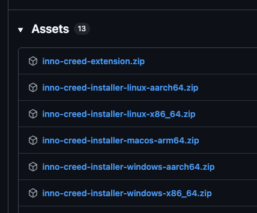
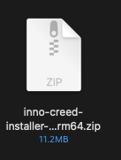
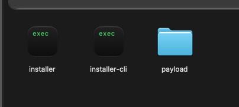
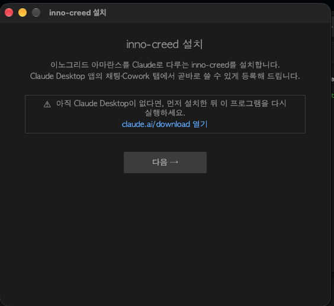
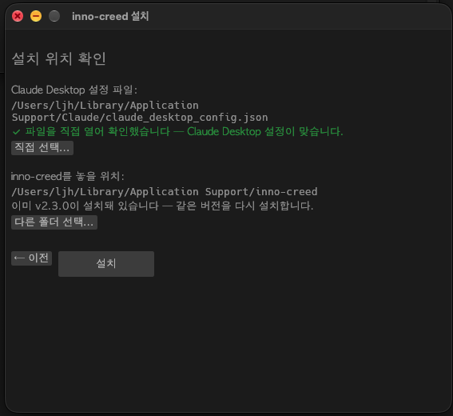
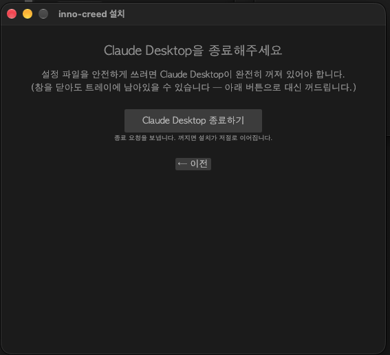
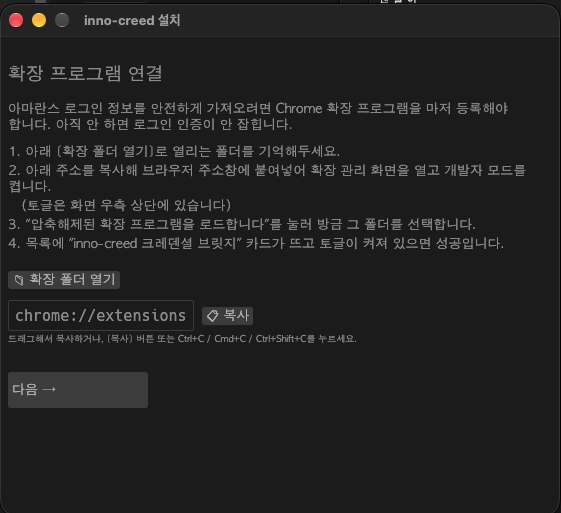
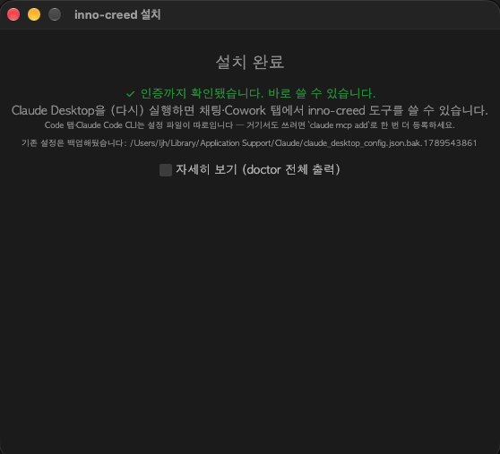

JSON을 직접 편집할 필요 없이, 설치 프로그램(installer)으로 클릭 몇 번이면 끝납니다. 내려받기부터 브라우저 연결까지 실제 화면 그대로 따라가세요.
inno-creed-installer-windows-x86_64.zip을 받으세요.내려받기 → 압축 풀기 → 실행 → 설치 → 확장 프로그램 연결. 전부 합쳐 10분이면 끝납니다.
installer가 들어간 파일을 내려받습니다최신 릴리즈 페이지를 열고 Assets 목록을 펼칩니다.
파일이 10개가 넘게 비슷한 이름으로 나열되는데, 이름에 installer가 들어간 것만 고르면 됩니다.

installer가 들어간 줄들 — 그중 내 컴퓨터에 맞는 하나를 받습니다.내 컴퓨터에 맞는 것은 이 표에서 고릅니다.
| 내 컴퓨터 | 받을 파일 |
|---|---|
| Windows (대부분 여기) | inno-creed-installer-windows-x86_64.zip |
| Windows — Snapdragon·ARM 노트북 | inno-creed-installer-windows-aarch64.zip |
| Mac (M1 이후 모든 Mac) | inno-creed-installer-macos-arm64.zip |
| Linux (일반 PC·서버) | inno-creed-installer-linux-x86_64.zip |
| Linux — ARM | inno-creed-installer-linux-aarch64.zip |
모르겠으면 inno-creed-installer-windows-x86_64.zip을 받으세요. 회사에서 쓰는 컴퓨터는 거의 이쪽입니다.
확실히 하려면 — Windows: 설정 → 시스템 → 정보 → 시스템 종류에 "64비트 운영 체제, x64 기반 프로세서"라고 적혀 있으면 windows-x86_64입니다.
Mac: 메뉴 → 이 Mac에 관하여에 칩이 Apple M1/M2/M3…이면 macos-arm64입니다.
⚠️ 이름을 끝까지 확인하세요. inno-creed-extension.zip(확장 프로그램)이나
inno-creed-windows-x86_64.exe처럼 installer가 없는 파일은 설치 프로그램이 아닙니다.
그것들을 받으면 이 안내대로 진행되지 않습니다.
보통 다운로드 폴더에 저장됩니다. Mac은 파일을 더블클릭하면 같은 자리에 폴더가 생기고, Windows는 오른쪽 클릭 → 압축 풀기를 누릅니다.

inno-creed-installer-…로 시작하는지 다시 한 번 확인하세요(10MB 남짓입니다).⚠️ Windows는 "압축 풀기"를 꼭 하세요. zip을 더블클릭해 안을 들여다본 채로 그 안의 installer.exe를 실행하면,
옆에 있어야 할 payload 폴더가 함께 풀리지 않아 설치가 중간에 멈춥니다.
installer를 더블클릭합니다폴더를 열면 세 가지가 들어 있습니다. 그중 installer(Windows는 installer.exe)를 더블클릭하세요.

installer가 실행할 것입니다. installer-cli는 화면이 안 뜰 때 쓰는 예비용이고, payload는 설치될 파일이 든 폴더입니다.🚨 세 개를 한자리에 둔 채로 실행하세요. installer만 바탕화면 등으로 옮기면
자기 옆에서 payload를 찾지 못해 "설치할 파일을 찾을 수 없습니다"로 멈춥니다.
Windows에서 "Windows가 PC를 보호했습니다" 경고가 뜨면 — 추가 정보 → 실행을 누르세요. 서명되지 않은 배포판이라 뜨는 정상 경고입니다.
Mac에서 "열 수 없음"이라며 아예 막히면 — 한 번만 허용해 주면 됩니다. macOS에서 인스톨러가 "열 수 없음"으로 막힐 때를 따라가세요(화면 캡처 안내).
눌렀는데 창이 안 뜨거나 아무 반응이 없으면 — 같은 폴더의 installer-cli로 똑같이 설치할 수 있습니다.
글자 화면으로 설치하기(installer-cli)를 보세요. Enter만 계속 누르면 끝납니다.
설치 프로그램이 뜨면 안내를 읽고 [다음 →]만 누르면 됩니다.

"아직 Claude Desktop이 없다면" 안내가 보입니다. Claude Desktop을 아직 안 깔았다면 그 줄의 링크로 먼저 설치하고, 이 프로그램을 다시 실행하세요. inno-creed는 Claude Desktop에 등록되는 도구라 앱이 없으면 등록할 곳이 없습니다.
두 가지를 보여줍니다 — 어느 설정 파일에 등록할지와 프로그램을 어디에 놓을지입니다. 둘 다 자동으로 찾아주므로 보통은 그대로 [설치]를 누르면 됩니다.

이미 깔려 있으면 "이미 vX.Y.Z이 설치돼 있습니다"라고 알려줍니다. 그대로 [설치]를 누르면 덮어써서 새로 깔립니다 — 업그레이드도 같은 방법입니다.
설정 파일을 못 찾았다고 나오면 [직접 선택…]으로 골라주세요.
Mac은 ~/Library/Application Support/Claude/claude_desktop_config.json,
Windows는 %APPDATA%\Claude\claude_desktop_config.json 입니다.
설정 파일을 안전하게 쓰려면 앱이 꺼져 있어야 합니다. 직접 끄지 않아도 됩니다 — 버튼이 대신 꺼줍니다.

Claude Desktop은 창을 닫아도 트레이(Windows)·메뉴바(Mac)에 남아 있습니다. "껐는데 왜 이 화면이지?" 싶다면 그 때문입니다.
몇 초가 지나도 안 꺼지면 [강제 종료] 버튼이 따로 나타납니다. 저장하지 않은 작업이 있으면 잃을 수 있으니, 그 앞 단계가 안 될 때만 쓰세요.
설치가 끝나면 이 화면이 나옵니다. 아마란스 로그인 정보를 Claude로 넘겨주는 다리라서, 여기서 멈추면 도구는 보이지만 전부 "로그인하세요"만 돌려줍니다.

화면 그대로 따라가는 자세한 안내는 확장 프로그램 설치 방법에 있습니다(개발자 모드 위치, 폴더 고르는 화면까지 캡처로).
🚨 예전에 확장을 올려둔 적이 있다면, 먼저 그 항목을 삭제하세요. 확장 ID가 같아서 같은 것을 두 벌 올릴 수 없습니다. 특히 예전에 다운로드 폴더에 풀어서 올렸다면, 그 폴더가 지워지는 순간 확장이 조용히 죽어 있습니다 — 겉보기엔 설치돼 있는데 아무것도 전달되지 않습니다.
🚨 이번에 고른 폴더는 지우거나 옮기면 안 됩니다. 브라우저가 그 폴더를 계속 읽습니다. 설치 프로그램이 만들어 준 폴더를 그대로 쓰는 것이 가장 안전합니다.
올린 뒤 gw.innogrid.com에 로그인하면 로그인 정보가 자동으로 전달됩니다. 이미 로그인돼 있다면 새로고침하세요.
마지막 화면이 설치 결과와 인증까지 실제로 되는지를 함께 보여줍니다.

✅ Claude Desktop을 다시 실행하면 채팅·Cowork 탭에서 inno-creed 도구를 쓸 수 있습니다. "아마란스에서 내 오늘 일정 알려줘"처럼 말로 시켜보세요.
"등록은 됐지만 인증 확인은 안 됐습니다"(노란색)가 뜨면 — 보통 확장 프로그램을 아직 안 올렸거나 아마란스에 로그인이 안 된 경우입니다. 앞 단계를 마친 뒤 Claude에서 도구를 한 번 불러보면 그때 다시 잡습니다. [자세히 보기]를 펼치면 어느 단계에서 막혔는지 그대로 나옵니다.
Code 탭과 Claude Code CLI는 설정 파일이 따로입니다. 거기서도 쓰려면 터미널에서 claude mcp add로 한 번 더 등록해야 합니다 — 완료 화면에도 같은 안내가 적혀 있습니다.
확장 프로그램이 안 올라갔거나, 올라갔는데 죽어 있는 경우입니다.
chrome://extensions에서 inno-creed 크레덴셜 브릿지 카드가 있는지, 토글이 켜져 있는지, 오류 표시가 없는지 보세요.
특히 예전에 다운로드 폴더에서 올렸다가 그 폴더를 지운 경우가 흔합니다. 이때는 카드가 남아 있어도 동작하지 않습니다 — 그 항목을 삭제하고, 설치 프로그램이 만든 폴더로 다시 올리세요.
창만 닫혔고 트레이(Windows)·메뉴바(Mac)에 살아 있는 상태입니다. 화면의 [Claude Desktop 종료하기]를 누르세요. 꺼지면 설치가 저절로 이어집니다. 그래도 안 꺼지면 몇 초 뒤 나타나는 [강제 종료]를 쓰세요.
installer를 혼자만 다른 곳으로 옮겼을 때 납니다. 설치 프로그램은 자기 바로 옆의 payload 폴더에서 설치할 파일을 찾습니다.
압축을 푼 폴더를 통째로 둔 채 그 안의 installer를 실행하세요.
Windows에서 zip을 풀지 않고 안에서 바로 실행했을 때도 같은 증상이 납니다.
"열 수 없음" 경고로 막힌 것입니다. 한 번만 허용해 주면 됩니다 — macOS에서 인스톨러가 "열 수 없음"으로 막힐 때를 따라가세요.
설치할 때 쓴 installer를 --uninstall 옵션으로 실행하면 등록 해제와 파일 삭제를 함께 해줍니다.
Windows는 설정 → 앱 → inno-creed → 제거로도 됩니다.
그래픽 초기화에 실패하는 환경입니다. 같은 폴더의 installer-cli를 대신 실행하면 같은 설치를 글자 화면으로 진행합니다 —
글자 화면으로 설치하기(installer-cli)에 화면과 단계별 설명이 있습니다. Enter만 계속 눌러도 설치됩니다.